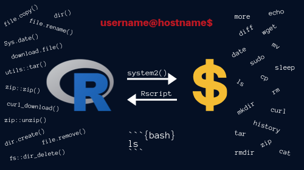

Welcome to Rsquared Academy open courses. Here, you will find contents of all our self paced online courses. We have created this specifically for those who do not like to sign up on a platform to access course contents. We hope you will find the courses here useful in your data science learning journey. Feedback is always welcome. If you see mistakes or want to suggest changes, please reach out to us at support@rsquaredacademy.com.

Introduction to R
In this introductory course, you will learn about R and its ecosystem. You will learn about the evolution of R, its current capabilities & the organizations working for the development of R. You will be introduced to RStudio, a very popular IDE, the R community, and tidyverse, a collection of R packages designed for data science.
Online Course YouTube Blog Post: 1 2 3 4 ebook Slides: 1 2 3 4 GitHub
Import Data into R
Importing or reading data is one of the most basic and crucial stages of data analysis. In this introductory course, you will learn to read data into R from different sources and in multiple formats. You will examine the challenges in reading data and use appropriate methods to address them.
Import Excel Data into R
Importing or reading data is one of the most basic and crucial stages of data analysis. In this introductory course, you will learn to read data into R from different sources and in multiple formats. You will examine the challenges in reading data and use appropriate methods to address them.
Data Wrangling with dplyr - Part I
In this course, you will master techniques for data manipulation using the dplyr package. You will learn to filter, select, sort, mutate and summarize data. You will learn to join tables, make your code readable using pipes and use tibbles instead of data frames.
Data Wrangling with dplyr - Part II
In this course, you will learn to join tables using dplyr's two table verbs. Data does not come in the structure or shape in which we need it for analysis and a lot of time is spent in getting the data into shape. You will learn the best ways to combine split data sets to create single tables for your data analysis pipeline.
Data Wrangling with dplyr - Part III
Data does not come in the structure or shape in which we need it for analysis and a lot of time is spent in getting the data into shape. As such reshaping data is an invaluable skill set for a data scientist. In this course, you will master sophisticated techniques for data manipulation using the dplyr package.
Introduction to tibbles
Data does not come in the structure or shape in which we need it for analysis and a lot of time is spent in getting the data into shape. As such reshaping data is an invaluable skill set for a data scientist. In this course, you will learn about tibbles, an alternative for dataframes.
Readable Code with Pipes
R code contain a lot of parentheses in case of a sequence of multiple operations. When you are dealing with complex code, it results in nested function calls which are hard to read and maintain. The magrittr package by Stefan Milton Bache provides pipes enabling us to write R code that is readable.

Practical Introduction to Webscraping in R
Are you trying to compare price of products across websites? Are you trying to monitor price changes every hour? Or planning to do some text mining or sentiment analysis on reviews of products or services? If yes, how would you do that? In this course, we will learn about web scraping using R.

Association Rule Mining in R
Ever wondered why items are displayed in a particular way in retail/online stores. Why certain items are suggested to you based on what you have added to the cart? Blame it on market basket analysis or association rule mining.

Regular Expressions in R
In this course, we will learn about using regular expressions in R. While it is aimed at absolute beginners, we hope experienced users will find it useful as well. The post is broadly divided into 3 sections. In the first section, we will introduce the pattern matching functions such as grep, grepl etc. as we will be using them in the rest of the post.
Customer Segmentation using RFM Analysis
In this course, students will learn to segment customers using recency, frequency and monetary value analysis. Students will look at a case study to understand how RFM can be used to segment customers and tailor offers to them. They will understand the difference between transaction level data and customer level data.

Working with Databases using R
In this course, you will learn to interact with databases from R. From connecting to different databases from R, using SQL script in RStudio & the SQL engine in knitr while working with RMarkdown documents to querying, visualizing and modeling data while securely handling database credentials.
Online Course YouTube Blog Post ebook Slides GitHub RStudio Cloud

Command Line Basics
In this course, you will be introduced to shell commands. Our goal was to ensure that after completing this tutorial, readers should be able to use the shell for version control, managing cloud services (like deploying your own shiny server etc.), execute commands in R & RMarkdown and execute R scripts in the shell.
Online Course YouTube Blog Post ebook Slides GitHub RStudio Cloud
Handling Date & Time in R
This course is designed to give you a comprehensive introduction to handling date and time data in R. If you are someone who deals with data, you would know that date/time come in all possible weird formats. As such, it is important to know how to parse, manipulate and compute with date and time in R.
Online Course YouTube Blog Post ebook Slides GitHub RStudio Cloud